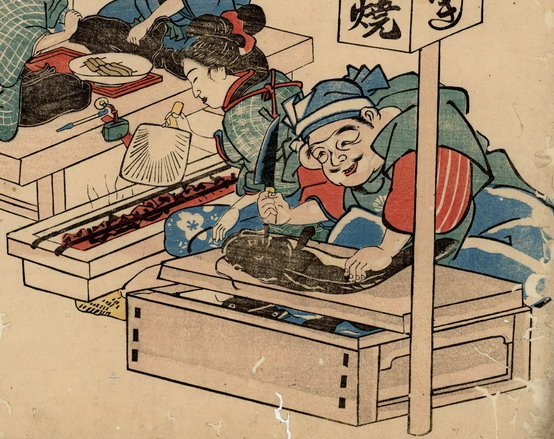

恵比寿がまな板の上でさばいている。まな板の下の桶には水がはられ、鯰が泳いでいる。恵比寿の向かって左側に座った女性が、団扇で炭をあおいでいる。
出典：親書誌：U426_nichibunken_0182：江戸前かばやき鯰大火場焼；エドマエカバヤキナマズオオカバヤキ／日付：2010／資源識別子：U426_nichibunken_0182_0001_0000
Copyright (c)2010- International Research Center for Japanese Studies, Kyoto, Japan. All rights reserved.